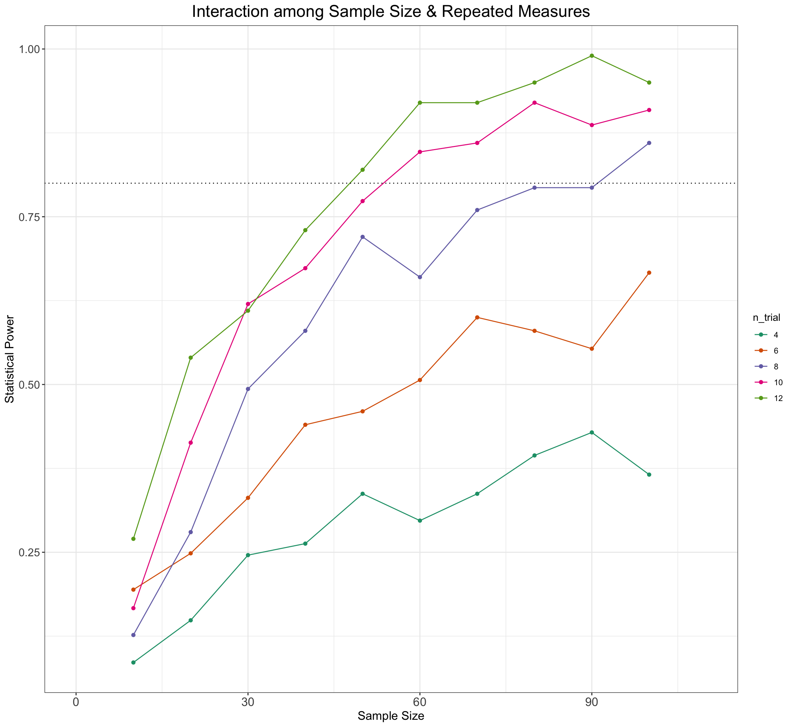

subj_n <- seq(10, 100, by = 10)
trial_n <- seq(4, 12, by = 2)
NumberOfModels <- 25
param_combinations <- expand.grid(subj_n = subj_n, trial_n = trial_n)Grid Searches and Sensitivity Analyses
1 Using Grid Searches to Explore the Multiverse
It should be clear from the previous sections that the data simulation process involves a multiverse of experimenter choices. One way to explore (and calm our fears about) the respective importance of these individual choices and their interactions would be to conduct a sensitivity analysis with a grid search of all available combinations among parameter values of interest. To do this, we can wrap our Simulation and Modelling function with a higher-level function that inputs a series of parameter combinations that we are interested in exploring further. Here is a suggestion for a function of this type. We can start by creating a matrix of parameter combinations that we are interested in.
run_sims_grid_point <- function(filename_full, trial_n, subj_n) {
ADS_n = trial_n/2
IDS_n = trial_n/2
n_subj = subj_n
dataSimulated <- SimulateEffectSizeData(n_subj = n_subj,
n_ADS = ADS_n, n_IDS = IDS_n)
model <- lmer(EF ~ 1 + SpeechStyle + (1 | item_id) + (1 +
SpeechStyle | subj_id), data = dataSimulated)
sim_results <- broom.mixed::tidy(model)
# append the results to a file
append <- file.exists(filename_full)
write_csv(sim_results, filename_full, append = append)
# return the tidy table
sim_results
}# let's make a new folder to store the output of the
# simulation function:
if (file.exists(here("sims_grid_search"))) {
setwd(here("sims_grid_search"))
} else {
dir.create(here("sims_grid_search"))
setwd(here("sims_grid_search"))
}
for (i in seq_len(nrow(param_combinations))) {
sim_params <- param_combinations[i, ]
filename_full <- paste0(here("sims_grid_search/test_grid_search_"),
sim_params$subj_n, "_", sim_params$trial_n, ".csv")
start_time <- Sys.time() # Start time
sims <- purrr::map_df(1:NumberOfModels, ~run_sims_grid_point(filename_full = filename_full,
subj_n = sim_params$subj_n, trial_n = sim_params$trial_n))
end_time <- Sys.time() # End time
cat("Simulation", i, "Time elapsed:", end_time - start_time,
"\n")
}setwd(here("sims_grid_search"))
file_names <- list.files(pattern = "*.csv")
# read in all CSV files into a list of dataframes
df_list <- purrr::map(file_names, ~{
df <- read.csv(.x)
df$filename <- .x
df
})
df <- purrr::reduce(df_list, dplyr::bind_rows)
df_per_sim <- df %>%
filter(effect == "fixed") %>%
filter(term == "SpeechStyle") %>%
group_by(filename) %>%
summarise(median_estimate = median(estimate), median_se = median(std.error),
power = mean(p.value < 0.05))
PowerGridData <- df_per_sim %>%
mutate(n_subj = as.numeric(sapply(strsplit(filename, "_"),
`[`, 4)), n_trial = as.factor(str_replace(sapply(strsplit(filename,
"_"), `[`, 5), pattern = ".csv", ""))) %>%
mutate(n_trial = factor(n_trial, levels = c("4", "6", "8",
"10", "12")))
ggplot(PowerGridData) + geom_point(aes(x = n_subj, y = power,
color = n_trial)) + geom_line(aes(x = n_subj, y = power,
color = n_trial)) + geom_hline(yintercept = 0.8, linetype = 3) +
xlim(c(0, 110)) + xlab("Sample Size") + ylab("Statistical Power") +
ggtitle("Interaction among Sample Size & Repeated Measures") +
scale_color_brewer(palette = "Dark2") + plot_theme
2 Exercises to Check Understanding
2.1 Exercise VI
How would you adapt the above grid search code to investigate the effect of varying the number of subjects and different effect sizes?
Show the code
if (file.exists(here("sims_grid_search_exercise_6"))) {
setwd(here("sims_grid_search_exercise_6"))
} else {
dir.create(here("sims_grid_search_exercise_6"))
setwd(here("sims_grid_search_exercise_6"))
}
subj_n <- seq(2, 50, by = 3)
effectsize <- seq(0.3, 0.9, by = 0.3)
NumberOfModels <- 400
param_combinations <- expand.grid(subj_n = subj_n, effectsize = effectsize)
run_sims_grid_point <- function(filename_full, ef, subj_n) {
ef = effectsize
n_subj = subj_n
dataSimulated <- SimulateEffectSizeData(n_subj = n_subj,
mean_slope = ef)
model <- lmer(EF ~ 1 + SpeechStyle + (1 | item_id) + (1 +
SpeechStyle | subj_id), data = dataSimulated)
sim_results <- broom.mixed::tidy(model)
# append the results to a file
append <- file.exists(filename_full)
write_csv(sim_results, filename_full, append = append)
# return the tidy table
sim_results
}
for (i in seq_len(nrow(param_combinations))) {
sim_params <- param_combinations[i, ]
filename_full <- paste0(here("sims_grid_search_exercise_6/test_grid_search_"),
sim_params$subj_n, "_", sim_params$ef, ".csv")
start_time <- Sys.time() # Start time
sims <- purrr::map_df(1:NumberOfModels, ~run_sims_grid_point(filename_full = filename_full,
subj_n = sim_params$subj_n, ef = sim_params$effectsize))
end_time <- Sys.time() # End time
cat("Simulation", i, "Time elapsed:", end_time - start_time,
"\n")
}Show the code
setwd(here("sims_grid_search_exercise_6"))
file_names <- list.files(pattern = "*.csv")
# read in all CSV files into a list of dataframes
df_list <- purrr::map(file_names, ~{
df <- read.csv(.x)
df$filename <- .x
df
})
df <- purrr::reduce(df_list, dplyr::bind_rows)
df_per_sim <- df %>%
filter(effect == "fixed") %>%
filter(term == "SpeechStyle") %>%
group_by(filename) %>%
summarise(median_estimate = median(estimate), median_se = median(std.error),
power = mean(p.value < 0.05))
PowerGridData <- df_per_sim %>%
mutate(n_subj = as.numeric(sapply(strsplit(filename, "_"),
`[`, 4)), ef = as.factor(str_replace(sapply(strsplit(filename,
"_"), `[`, 5), pattern = ".csv", "")))
ggplot(PowerGridData) + geom_point(aes(x = n_subj, y = power,
color = ef)) + geom_line(aes(x = n_subj, y = power, color = ef)) +
geom_hline(yintercept = 0.8, linetype = 3) + xlab("Sample Size") +
ylab("Statistical Power") + ggtitle("Interaction among Number of Subjects & Effect Size") +
scale_color_brewer(palette = "Dark2") + plot_theme